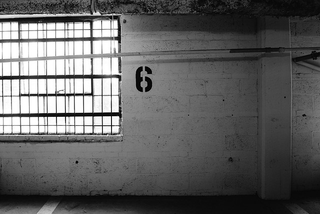

Estructuras de hormigón Armado
Contents
{kind=link}
17. Estructuras de hormigón Armado#
Se darán a conocer los elementos que forman parte de la estructura de hormigón armado. Este es el esqueleto del edificio, y esta conformado por elementos estructurales, los que se catalogan en primarios, destinados a transmitir a la infraestructura los esfuerzos que demandan la obra de construcción, y los elementos estructurales secundarios, destinados a servir de soporte a elementos no estructurales tales como pórticos, tabiques, cielos, entre otros. En consecuencia, es claro que los componentes estructurales de una edificación, que se dividen en pilares, vigas, cadenas, muros y losas, debido a su papel como componentes resilientes de la estructura, son los más cruciales (Solminiac & Thenoux, 1998).
{kind=link}
17.1. Pilares#
Son elementos estructurales verticales que, según su ubicación en la estructura del proyecto, deben soportar cargas de compresión, flexión, cortante y torsión. Los pilares comunes, columnas y machones son la forma en que generalmente se clasifican.
Pilar común
Son aquellos que tiene al menos una cara adosada a una pared. Estos pilares se dividen a su vez en extremos, que tiene una sola cara adosada al muro, intermedios, el que tienen dos de sus caras opuestas adosadas a un muro y el esquinero, con dos de sus caras verticales contiguas en contacto con los muros.
{kind=link}
Columnas
Pilares aislados que no están adosados a ningún muro.
{kind=link}
Machones
Pilares con una dimensión (diferente a la longitud) significativamente mayor que la otra (Solminiac & Thenoux, 1998).

17.2. Vigas#
Los elementos estructurales horizontales, que se diseñan principalmente a flexión, corte y torsión, se pueden dividir en vigas aisladas, que pueden tener diferente forma geométrica, según el material con el que estén construidas, y la viga colaborante, que es una viga de hormigón o metal que trabaja junto con la estructura de la losa (Solminiac & Thenoux, 1998).
{kind=link}
17.3. Cadenas#
Elementos horizontales que son significativamente más largos que su sección transversal y están apoyados en toda su longitud, lo que significa que no están sujetos a esfuerzos de flexión; de acuerdo a su ubicación y función se dividen en cadenas normales, aquellas que van sobre muros y su función es amarrar los pilares; Las cadenas de dintel, son aquellas que se colocan en la parte superior de un vano de menos de dos metros, como en una ventana o puerta (si la longitud es superior a dos metros se debe utilizar una viga dintel); las cadenas de sobrecimientos, son aquellas que se ubican a la altura del primer piso, y las cadenas de fundación (Solminiac & Thenoux, 1998).
{kind=link}
17.4. Muros#
Solminiac & Thenoux(1998), menciona que se pueden categorizar en función a su uso previsto y de los materiales utilizados en su fabricación. Así mismo, los define como elementos verticales con un espesor significativamente menor que el resto de sus dimensiones.
Muros estructurales, Cuando se planifican y construyen elementos estructurales que pueden transmitir fuerzas verticales y resistir fuerzas de corte horizontales, se convierten en muros estructurales.
Muros no estructurales que son aquellos que separan ambientes dentro o fuera de un edificio, deben tener fundamentalmente propiedades y acústicas. No es necesario que tengan propiedades de resistencia estructural; pueden ser opacos o transparentes.
Mampostería La albañilería es el método de construcción utilizado para construir muros de bloques o ladrillos, que se utilizan para separar habitaciones dentro de los edificios (Cevallos, 2016).
{kind=link}
17.5. Losas#
Son elementos estructurales horizontales, cuyas dimensiones en planta son mucho mayores que su espesor, donde las cargas son perpendiculares a su superficie, sometidos principalmente a esfuerzos de flexión, donde las cargas se transmiten a sus bordes de apoyo, y se utilizan para proporcionar superficies planas y firme. La distribución del refuerzo, la forma y composición de la estructura, los soportes y el método de construcción son solo algunos de los factores que se utilizan para categorizar las losas (Construyendo, 2016).
{kind=link}
17.6. Escaleras#
Está diseñado para facilitar el acceso entre los diferentes niveles de una construcción uniéndolos en pasos sucesivos (Stozitzky & Prieto,1989).
{kind=link}
from IPython.display import YouTubeVideo
YouTubeVideo("SuJoOV0gcdw")